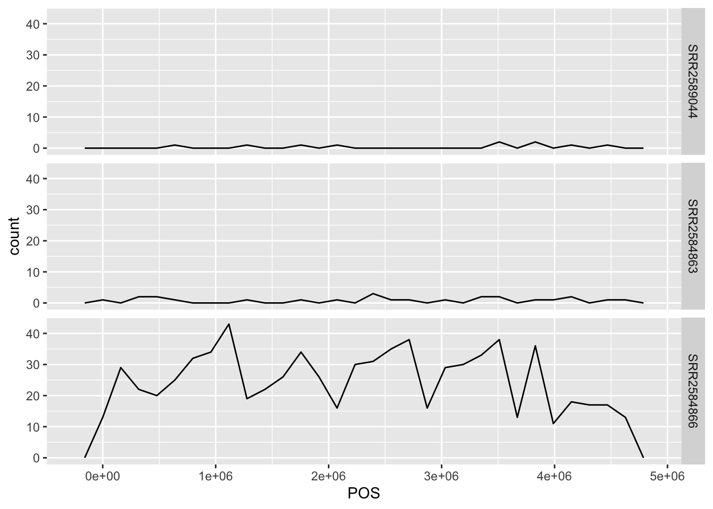
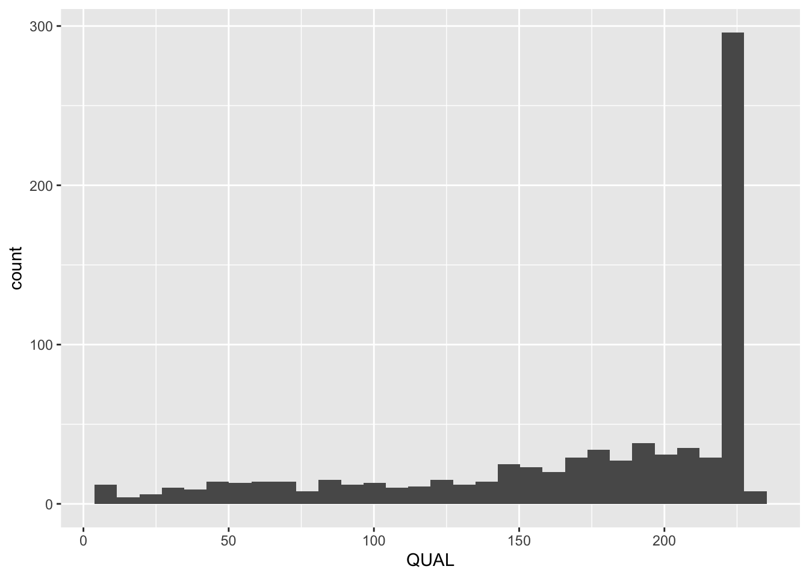
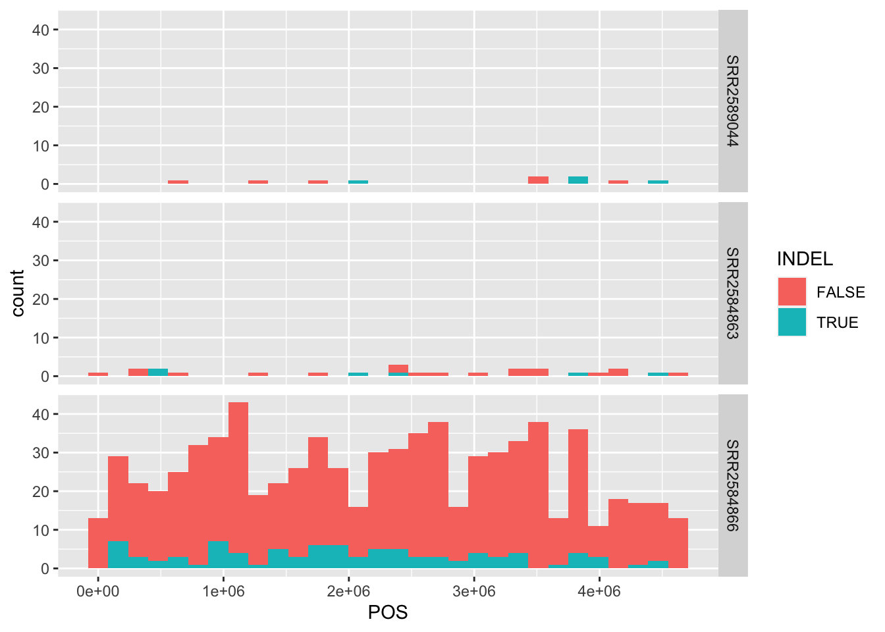

library("dplyr")
library("tidyr")
library("ggplot2")R VCF
1 Load libraries
2 Load the vcf file
See the Data Carpentery for a description of the data.
We will load the data and call the dataframe variants.
variants = read.csv(url("https://raw.githubusercontent.com/datacarpentry/genomics-r-intro/main/data/combined_tidy_vcf.csv"))3 Examine the vcf file
Let’s get an idea of what variants look like. Here’s a brief description of the CVF format.
We can preview the first few lines:
head(variants) sample_id CHROM POS ID REF ALT QUAL FILTER INDEL IDV IMF
1 SRR2584863 CP000819.1 9972 NA T G 91 NA FALSE NA NA
2 SRR2584863 CP000819.1 263235 NA G T 85 NA FALSE NA NA
3 SRR2584863 CP000819.1 281923 NA G T 217 NA FALSE NA NA
4 SRR2584863 CP000819.1 433359 NA CTTTTTTT CTTTTTTTT 64 NA TRUE 12 1.0
5 SRR2584863 CP000819.1 473901 NA CCGC CCGCGC 228 NA TRUE 9 0.9
6 SRR2584863 CP000819.1 648692 NA C T 210 NA FALSE NA NA
DP VDB RPB MQB BQB MQSB SGB MQ0F ICB HOB AC AN DP4 MQ
1 4 0.0257451 NA NA NA NA -0.556411 0.000000 NA NA 1 1 0,0,0,4 60
2 6 0.0961330 1 1 1 NA -0.590765 0.166667 NA NA 1 1 0,1,0,5 33
3 10 0.7740830 NA NA NA 0.974597 -0.662043 0.000000 NA NA 1 1 0,0,4,5 60
4 12 0.4777040 NA NA NA 1.000000 -0.676189 0.000000 NA NA 1 1 0,1,3,8 60
5 10 0.6595050 NA NA NA 0.916482 -0.662043 0.000000 NA NA 1 1 1,0,2,7 60
6 10 0.2680140 NA NA NA 0.916482 -0.670168 0.000000 NA NA 1 1 0,0,7,3 60
Indiv gt_PL
1 /home/dcuser/dc_workshop/results/bam/SRR2584863.aligned.sorted.bam 121,0
2 /home/dcuser/dc_workshop/results/bam/SRR2584863.aligned.sorted.bam 112,0
3 /home/dcuser/dc_workshop/results/bam/SRR2584863.aligned.sorted.bam 247,0
4 /home/dcuser/dc_workshop/results/bam/SRR2584863.aligned.sorted.bam 91,0
5 /home/dcuser/dc_workshop/results/bam/SRR2584863.aligned.sorted.bam 255,0
6 /home/dcuser/dc_workshop/results/bam/SRR2584863.aligned.sorted.bam 240,0
gt_GT gt_GT_alleles
1 1 G
2 1 T
3 1 T
4 1 CTTTTTTTT
5 1 CCGCGC
6 1 TWhat other codes can be used to check the structure of each column? For example, to find out if they are numeric or categorical.
Code
summary(variants)
## sample_id CHROM POS ID
## Length:801 Length:801 Min. : 1521 Mode:logical
## Class :character Class :character 1st Qu.:1115970 NA's:801
## Mode :character Mode :character Median :2290361
## Mean :2243682
## 3rd Qu.:3317082
## Max. :4629225
##
## REF ALT QUAL FILTER
## Length:801 Length:801 Min. : 4.385 Mode:logical
## Class :character Class :character 1st Qu.:139.000 NA's:801
## Mode :character Mode :character Median :195.000
## Mean :172.276
## 3rd Qu.:225.000
## Max. :228.000
##
## INDEL IDV IMF DP
## Mode :logical Min. : 2.000 Min. :0.5714 Min. : 2.00
## FALSE:700 1st Qu.: 7.000 1st Qu.:0.8824 1st Qu.: 7.00
## TRUE :101 Median : 9.000 Median :1.0000 Median :10.00
## Mean : 9.396 Mean :0.9219 Mean :10.57
## 3rd Qu.:11.000 3rd Qu.:1.0000 3rd Qu.:13.00
## Max. :20.000 Max. :1.0000 Max. :79.00
## NA's :700 NA's :700
## VDB RPB MQB BQB
## Min. :0.0005387 Min. :0.0000 Min. :0.0000 Min. :0.1153
## 1st Qu.:0.2180410 1st Qu.:0.3776 1st Qu.:0.1070 1st Qu.:0.6963
## Median :0.4827410 Median :0.8663 Median :0.2872 Median :0.8615
## Mean :0.4926291 Mean :0.6970 Mean :0.5330 Mean :0.7784
## 3rd Qu.:0.7598940 3rd Qu.:1.0000 3rd Qu.:1.0000 3rd Qu.:1.0000
## Max. :0.9997130 Max. :1.0000 Max. :1.0000 Max. :1.0000
## NA's :773 NA's :773 NA's :773
## MQSB SGB MQ0F ICB
## Min. :0.01348 Min. :-0.6931 Min. :0.00000 Mode:logical
## 1st Qu.:0.95494 1st Qu.:-0.6762 1st Qu.:0.00000 NA's:801
## Median :1.00000 Median :-0.6620 Median :0.00000
## Mean :0.96428 Mean :-0.6444 Mean :0.01127
## 3rd Qu.:1.00000 3rd Qu.:-0.6364 3rd Qu.:0.00000
## Max. :1.01283 Max. :-0.4536 Max. :0.66667
## NA's :48
## HOB AC AN DP4 MQ
## Mode:logical Min. :1 Min. :1 Length:801 Min. :10.00
## NA's:801 1st Qu.:1 1st Qu.:1 Class :character 1st Qu.:60.00
## Median :1 Median :1 Mode :character Median :60.00
## Mean :1 Mean :1 Mean :58.19
## 3rd Qu.:1 3rd Qu.:1 3rd Qu.:60.00
## Max. :1 Max. :1 Max. :60.00
##
## Indiv gt_PL gt_GT gt_GT_alleles
## Length:801 Length:801 Min. :1 Length:801
## Class :character Class :character 1st Qu.:1 Class :character
## Mode :character Mode :character Median :1 Mode :character
## Mean :1
## 3rd Qu.:1
## Max. :1
## Code
str(variants)
## 'data.frame': 801 obs. of 29 variables:
## $ sample_id : chr "SRR2584863" "SRR2584863" "SRR2584863" "SRR2584863" ...
## $ CHROM : chr "CP000819.1" "CP000819.1" "CP000819.1" "CP000819.1" ...
## $ POS : int 9972 263235 281923 433359 473901 648692 1331794 1733343 2103887 2333538 ...
## $ ID : logi NA NA NA NA NA NA ...
## $ REF : chr "T" "G" "G" "CTTTTTTT" ...
## $ ALT : chr "G" "T" "T" "CTTTTTTTT" ...
## $ QUAL : num 91 85 217 64 228 210 178 225 56 167 ...
## $ FILTER : logi NA NA NA NA NA NA ...
## $ INDEL : logi FALSE FALSE FALSE TRUE TRUE FALSE ...
## $ IDV : int NA NA NA 12 9 NA NA NA 2 7 ...
## $ IMF : num NA NA NA 1 0.9 ...
## $ DP : int 4 6 10 12 10 10 8 11 3 7 ...
## $ VDB : num 0.0257 0.0961 0.7741 0.4777 0.6595 ...
## $ RPB : num NA 1 NA NA NA NA NA NA NA NA ...
## $ MQB : num NA 1 NA NA NA NA NA NA NA NA ...
## $ BQB : num NA 1 NA NA NA NA NA NA NA NA ...
## $ MQSB : num NA NA 0.975 1 0.916 ...
## $ SGB : num -0.556 -0.591 -0.662 -0.676 -0.662 ...
## $ MQ0F : num 0 0.167 0 0 0 ...
## $ ICB : logi NA NA NA NA NA NA ...
## $ HOB : logi NA NA NA NA NA NA ...
## $ AC : int 1 1 1 1 1 1 1 1 1 1 ...
## $ AN : int 1 1 1 1 1 1 1 1 1 1 ...
## $ DP4 : chr "0,0,0,4" "0,1,0,5" "0,0,4,5" "0,1,3,8" ...
## $ MQ : int 60 33 60 60 60 60 60 60 60 60 ...
## $ Indiv : chr "/home/dcuser/dc_workshop/results/bam/SRR2584863.aligned.sorted.bam" "/home/dcuser/dc_workshop/results/bam/SRR2584863.aligned.sorted.bam" "/home/dcuser/dc_workshop/results/bam/SRR2584863.aligned.sorted.bam" "/home/dcuser/dc_workshop/results/bam/SRR2584863.aligned.sorted.bam" ...
## $ gt_PL : chr "121,0" "112,0" "247,0" "91,0" ...
## $ gt_GT : int 1 1 1 1 1 1 1 1 1 1 ...
## $ gt_GT_alleles: chr "G" "T" "T" "CTTTTTTTT" ...Let’s walk through some of the important columns:
sample_id
The data should include only three samples:
| SRA Run Number | Clone | Generation | Cit | Hypermutable | Read Length | Sequencing Depth |
|---|---|---|---|---|---|---|
| SRR2589044 | REL2181A | 5,000 | Unknown | None | 150 | 60.2 |
| SRR2584863 | REL7179B | 15,000 | Unknown | None | 150 | 88 |
| SRR2584866 | REL11365 | 50,000 | Cit+ | plus | 150 | 138.3 |
Let’s check if that is true.
Write a code to show the unique entries in sample_id
Code
unique(variants$sample_id)
## [1] "SRR2584863" "SRR2584866" "SRR2589044"CHROM
Remember that the files are generated from E. coli, which should have only one (circular) chromosome. Let’s confirm this in CHROM.
# length display the lenght of a vector.
# == 1 will give a logical result of whether it's T/F
length(unique(variants$CHROM))==1[1] TRUEPOS
POS is the position of where the variant occur. We can look at the count of these variant at different POS and separate it out by sample_id.
ggplot(variants, aes(POS)) +
geom_freqpoly() +
facet_grid(factor(sample_id, levels = c("SRR2589044", "SRR2584863", "SRR2584866"))~.) # The levels for sample_id are adjusted within ggplot. Previously we did it by modifying the dataframe.
REF/ALT
REF is the nucleotide in the reference genome.
ALT is the nucleotide in the sample genome.
unique(variants$REF) [1] "T" "G"
[3] "CTTTTTTT" "CCGC"
[5] "C" "ACAGCCAGCCAGCCAGCCAGCCAGCCAGCCAG"
[7] "AT" "A"
[9] "TGG" "AGGGG"
[11] "GTTTTTTTTT" "CAA"
[13] "GAA" "CTTTTTTTT"
[15] "CGGGGG" "CTTTTT"
[17] "TGGGGGGG" "AGGGGGGGG"
[19] "TGGGGGG" "CAAAAAAA"
[21] "AGGGGG" "GTTTT"
[23] "GTTTTTTT" "TGGGGG"
[25] "AGGGGGG" "ACCCCCCC"
[27] "CGGGGGG" "GAAAAAAAA"
[29] "AGGGGGGG" "GTTTTTTTT"
[31] "GCCCCCCC" "TCCCCCCC"
[33] "TCCCCCC" "TCCCCC"
[35] "GCCCCCC" "ATTTTTTTTT"
[37] "CTTTTTTTTT" "ATTTTTTTT"
[39] "ATT" "CATGATGATGATGAT"
[41] "TAAAAAA" "ACCCC"
[43] "CAAAAAAAA" "GCCCCC"
[45] "CAAAAAAAAA" "TAAAA"
[47] "GTT" "CAAAAAA"
[49] "GTTTTTT" "GCCCC"
[51] "CT" "GTTCTTCTTCTTC"
[53] "AGCGCGCGCGCG" "TAAAAAAAAA"
[55] "GTTTCGCTTTCGCT" "GA"
[57] "CCA" "CG"
[59] "AG" You’ll see that it includes more than just single nucleotide polymorphisms (SNPs).
For example, for the REF “CATGATGATGATGAT”, we can pull the row(s) that contains this, and display only the columns REF and ALT.
Turns out, the reference has four units of (GAT), but the variant has only 3.
filter(variants, REF =="CATGATGATGATGAT")[, c("REF", "ALT")] REF ALT
1 CATGATGATGATGAT CATGATGATGATQUAL
QUAL is a Phred-scaled probability that the observed variant exists at this site. Similar to that in fastq files, a higher score means a higher probability. We can look at the distribution of QUAL using geom_histogram(). Ideally we should filter the variants based on QAUL before analysis. But we are using them as is here.
ggplot(variants, aes(QUAL)) + geom_histogram()
INDEL
INDEL is a logical vector (T/F) that indicates whether the variant is a insertion/deletion.
class(variants$INDEL)[1] "logical"unique(variants$INDEL)[1] FALSE TRUEWe can filter logical vector, just like other character vector:
filter(variants, INDEL==T) %>% head() sample_id CHROM POS ID REF
1 SRR2584863 CP000819.1 433359 NA CTTTTTTT
2 SRR2584863 CP000819.1 473901 NA CCGC
3 SRR2584863 CP000819.1 2103887 NA ACAGCCAGCCAGCCAGCCAGCCAGCCAGCCAG
4 SRR2584863 CP000819.1 2333538 NA AT
5 SRR2584863 CP000819.1 3901455 NA A
6 SRR2584863 CP000819.1 4431393 NA TGG
ALT QUAL FILTER
1 CTTTTTTTT 64.0000 NA
2 CCGCGC 228.0000 NA
3 ACAGCCAGCCAGCCAGCCAGCCAGCCAGCCAGCCAGCCAGCCAGCCAGCCAGCCAG 56.0000 NA
4 ATT 167.0000 NA
5 AC 43.4147 NA
6 T 228.0000 NA
INDEL IDV IMF DP VDB RPB MQB BQB MQSB SGB MQ0F ICB HOB AC
1 TRUE 12 1.000000 12 0.477704 NA NA NA 1.000000 -0.676189 0 NA NA 1
2 TRUE 9 0.900000 10 0.659505 NA NA NA 0.916482 -0.662043 0 NA NA 1
3 TRUE 2 0.666667 3 0.901652 NA NA NA 1.000000 -0.453602 0 NA NA 1
4 TRUE 7 1.000000 7 0.568173 NA NA NA 1.012830 -0.616816 0 NA NA 1
5 TRUE 2 1.000000 2 0.020000 NA NA NA NA -0.453602 0 NA NA 1
6 TRUE 10 1.000000 10 0.863210 NA NA NA 1.007750 -0.662043 0 NA NA 1
AN DP4 MQ
1 1 0,1,3,8 60
2 1 1,0,2,7 60
3 1 0,1,1,1 60
4 1 0,1,3,3 60
5 1 0,0,2,0 60
6 1 0,1,6,3 60
Indiv gt_PL
1 /home/dcuser/dc_workshop/results/bam/SRR2584863.aligned.sorted.bam 91,0
2 /home/dcuser/dc_workshop/results/bam/SRR2584863.aligned.sorted.bam 255,0
3 /home/dcuser/dc_workshop/results/bam/SRR2584863.aligned.sorted.bam 111,28
4 /home/dcuser/dc_workshop/results/bam/SRR2584863.aligned.sorted.bam 194,0
5 /home/dcuser/dc_workshop/results/bam/SRR2584863.aligned.sorted.bam 73,0
6 /home/dcuser/dc_workshop/results/bam/SRR2584863.aligned.sorted.bam 255,0
gt_GT gt_GT_alleles
1 1 CTTTTTTTT
2 1 CCGCGC
3 1 ACAGCCAGCCAGCCAGCCAGCCAGCCAGCCAGCCAGCCAGCCAGCCAGCCAGCCAG
4 1 ATT
5 1 AC
6 1 TWe can modify the plot before to show the INDEL in different color. Note that the bars are stacked instead of overlapping.
ggplot(variants, aes(POS, fill=INDEL)) +
geom_histogram() +
facet_grid(factor(sample_id, levels = c("SRR2589044", "SRR2584863", "SRR2584866"))~.) 
4 Analysis
Remember that the sample_id represent E. coli colonies sampled from different generations, with different characters (e.g., Cit+ and hypermutable).
Let’s test whether the number of genetic variants increase with generation.
We can make a dataframe to contain these information:
exp_detail = data.frame(
sample_id = c("SRR2589044", "SRR2584863", "SRR2584866"),
generation = c(5000, 15000, 50000),
Cit = c("unknown", "unknown", "Cit+"),
hypermutable = c("none", "none", "plus"),
seq_depth = c(60.2, 88, 138.3)
)Let’s count the number of variants in each sample_id
We know that each row represent one variants. table() allows us to count the occurrence of each entry in a character vector.
table(variants$sample_id)
SRR2584863 SRR2584866 SRR2589044
25 766 10 We can convert this into a dataframe and combine it into exp_detail.
var_summary = as.data.frame(table(variants$sample_id))
# fix names
names(var_summary) = c("sample_id", "variant_count")Now use left_join() to combine. (right_join will also work as we have the same sample_id in the two tables.)
# We'll save it as a new object
exp_result = left_join(exp_detail, var_summary, "sample_id")We can then plot and test whether the variant_count increases with generation.
Write a code to do the regression analysis with log10(variant_count):
Note that in the assignment before, we created a new column that has the log10 of a variable, then we run the test with that new column. An easier alternative is to directly use
log10(variant_count)in the formula oflm()and inggplot.
Code
summary(lm(log10(variant_count)~generation, exp_result))
##
## Call:
## lm(formula = log10(variant_count) ~ generation, data = exp_result)
##
## Residuals:
## 1 2 3
## 0.009769 -0.012560 0.002791
##
## Coefficients:
## Estimate Std. Error t value Pr(>|t|)
## (Intercept) 7.801e-01 1.464e-02 53.30 0.01194 *
## generation 4.203e-05 4.834e-07 86.94 0.00732 **
## ---
## Signif. codes: 0 '***' 0.001 '**' 0.01 '*' 0.05 '.' 0.1 ' ' 1
##
## Residual standard error: 0.01615 on 1 degrees of freedom
## Multiple R-squared: 0.9999, Adjusted R-squared: 0.9997
## F-statistic: 7558 on 1 and 1 DF, p-value: 0.007322Write a code to plot log10(variant_count) against generations.
Code
ggplot(exp_result, aes(x = generation, y = log10(variant_count))) +
geom_point() +
geom_smooth(method = lm) +
labs(x = "Generations", y = "Log count of genetic variant")5 Assignment
We know that there are many types of genetic variants in this VCF files. We have shown that the total number of variants increased with the number of generation. Here, the goal is to test:
Whether the number of SNPs increased with the number of generation.
Write codes to do the following and submit the R console commands & outputs in the assignment. Remember to annotate your codes.
Since we are only interested in SNPs, that means that
REFshould be either A, T, G, or C. Write some codes tofiltervariantto have only A/T/C/G inREF. Save it as a new object calledSNPIn the new object
SNP, each row represent a SNP. Again there are still three uniquesample_id, each representing a sample. Write some codes to generate a dataframe that shows the count of rows for each sample. Call this dataframeSNP_summary. It should have two columns, one namedsample_id, one namedSNP_count.Now combine
SNP_summarywithexp_resultbased onsample_id. Save it as a new object calledexp_result2.Do a linear regression to test whether the log10 of the number of SNP increases with generation. Write a statement to summarize the results and statistics.
Plot the data to visualize the regression result.